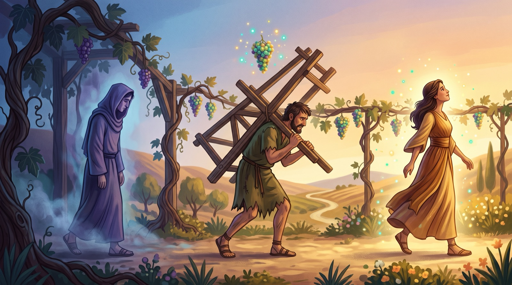
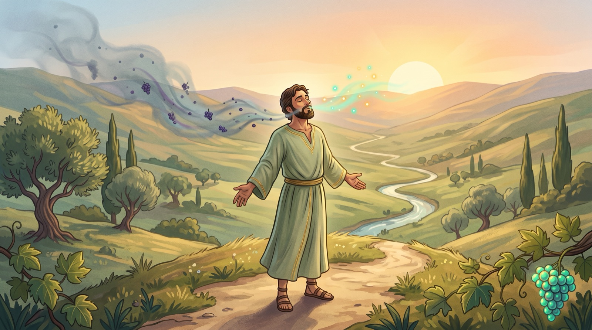

Урок 3. «Но вы примете силу»
На реке Парана, что в Парагвае, стоит одно из самых масштабных бетонных сооружений в мире. Оно строилось более 16 лет и в его строительстве было задействовано свыше 30.000 человек. Огромная инвестиция для такого рода конструкций из бетона.
Одного взгляда достаточно, чтобы понять, почему правительство Парагвая решилось на такое капиталовложение. Начиная с 1991 года вода начала протекать через эту массивную структуру, производя 12600 МВт электричества, что достаточно для обеспечения электричеством как самой страны, так и части соседствующей с Парагваем Бразилии. С тех пор, как вода начала проходить, этот огромный “кусок” бетона превратился в экономический мотор страны.
Таким же образом, каждый верующий во Христа обладает потенциалом подобной трансформации. Иисус обещал нам, что Дух Святой станет нашим источником “живой” воды и даст нам силу прожить новую жизнь во Христе. Понимать этот источник силы и позволять ему работать в нас станет жизненно важным в нашем духовном росте.
Иоанна 7:37-39
В последний же великий день праздника стоял Иисус и возгласил, говоря: “Кто жаждет, иди ко Мне и пей. Кто верует в Меня, у того, как сказано в Писании, из чрева потекут реки воды живой”. Сие сказал Он о Духе, Которого имели принять верующие в Него, ибо еще не было на них Духа Святого, потому что Иисус ещё не был прославлен.
К сожалению, не все верующие овладевают силой для проживания христианской жизни так, как это задумал Господь.
Так как наше взаимоотношение с Богом целиком зависит от того, что Он сделал для нас через Иисуса Христа, точно так же сила для проживания христианской жизни исходит исключительно от Него.
Кто же такой Дух Святой?
1 ДУХ СВЯТОЙ ЯВЛЯЕТСЯ ИСТОЧНИКОМ СИЛЫ ДЛЯ ХРИСТИАНСКОЙ ЖИЗНИ
Прочитай 2 Коринфянам 3:17-18.
Зачем Он пришел?
- Римл. 8:9 - Чтобы жить в нас.
Прочитай Римл.8:14-16
Прочитай Гал. 5:22,23
- Милосердие
- Радость
- Терпение
- Любовь
- МИР
Прочитай Иоанна 15:4,5
Прочитай Деяния 1:8.
Святой Андрей был первым апостолом, донёсшим до нашего края христианскую веру. Будучи исполненным Духа Святого, он возвещал прощение грехов через Иисуса Христа.
Мера, в которой эти качества проявляются в жизни верующего, зависит от степени доверия Христу в каждой детали своей жизни, а также от зрелости во Христе. Верующий, который только-только начал понимать миссию Духа Святого в своей жизни, не должен разочаровываться, если не приносит столько же плодов, сколько приносят другие, которые познали и практикуют эти истины уже давно.
2 МНОГИЕ ХРИСТИАНЕ НЕ ЗНАЮТ, КАК ОБРЕСТИ СИЛУ ДУХА СВЯТОГО
Ты стал христианином вследствие рождения свыше - результата работы Духа Святого (Иоанна 3:1-8). Начиная с того момента Дух Святой обитает в тебе (Иоанна 3:1-8). Несмотря на то, что Дух Святой живёт в каждом верующем, не все христиане полны Духа Святого.
Библия нам говорит о трёх категориях людей:
Душевный человек (1 Кор. 2:14)
Этот человек не доверился жертве Христа как плате за свои грехи, и, в результате, Дух Святой не обитает в нем.
- Жизнь под контролем собственного “Я”
- Я - “Я” или самолюбие на троне
- ✝ - Христос вне жизни
Плотской человек (1 Кор. 3:1-2)
Этот человек доверился жертве Иисуса Христа как плате за свои грехи, но он еще полагается на собственные усилия для того, чтобы прожить христианскую жизнь. Он пытается жить своими плотскими ресурсами, а не через силу Духа Святого.
- Жизнь под контролем собственного “Я”
- Я - “Я” или самолюбие на троне
- ✝ - Христос в жизни верующего, но не руководит ею.
Духовный христианин (1 Кор. 2:15)
Этот человек доверился Иисусу как Спасителю и полагается на силу Духа Святого, чтобы прожить христианскую жизнь.
- Жизнь, подчиненная Христу
- ✝ - Христос руководит жизнью
- Я - “Я” подчинено Христу

3 И ТЫ МОЖЕШЬ ИСПОЛНИТЬСЯ ДУХОМ СВЯТЫМ!!!
Ты можешь исполниться Духом через веру, когда полагаешься на Бога для того, чтобы приносить те плоды, которые Он обещал.
Необходимо выполнить три условия:
1. Прочти Матф. 5:6.
2. Прочти 1 Иоанна 1:9; Пс.65:18
3. Прочти Римл. 12:1,2
Если выполнить все эти условия, можно прямо сейчас верой почувствовать полноту Духа Святого.
Ты можешь исполниться Духом только верой, и следующий пример молитвы может выражать эту веру:
“Дорогой Господь, я признаюсь, что согрешил против Тебя. Благодарю, что Ты простил мои грехи через смерть Христа на кресте. Я приглашаю сейчас Иисуса занять Своё место на троне моей жизни. Наполни меня Духом Святым так, как Ты повелел нам, и так, как Ты обещал исполнить, если мы попросим в молитве с верой. Прошу Тебя об этом во имя Иисуса Христа, и как выражение моей веры прими мою благодарность за то, что Ты управляешь моей жизнью, наполнив меня Твоим Духом.
Если да, можешь помолиться прямо сейчас.
4 ТЫ МОЖЕШЬ БЫТЬ ИСПОЛНЕН ДУХОМ СВЯТЫМ ПОСТОЯННО (ДУХОВНОЕ ДЫХАНИЕ)
В течение последующих дней, если заметишь, что через грех ты взял управление своей жизни в собственные руки, что является актом непослушания, практикуй духовное дыхание (выдохни то, что нечисто, и вдохни чистый воздух: Дух Святой). Это важное духовное упражнение позволит тебе постоянно радоваться полному любви управлению твоей жизнью Иисуса Христа:

Выдыхай, исповедуя грех (1 Ин. 1:9, Евр. 10:1-25).
Какие факторы вовлечены в исповедание греха?
Вдыхай, доверяя управление своей жизнью Иисусу Христу (Римл. 12:1,2). Принимай верой полноту Духа Святого (Еф. 5:18).
Будь уверен, что Он будет направлять тебя и даст силы во всём, что ты делаешь. (1 Ин. 5:14,15).
Material publicat de Here’s Life Publishers, Inc. © 1984, Campus Crusade for Christ, Inc. Traducere în lb. română, 1998